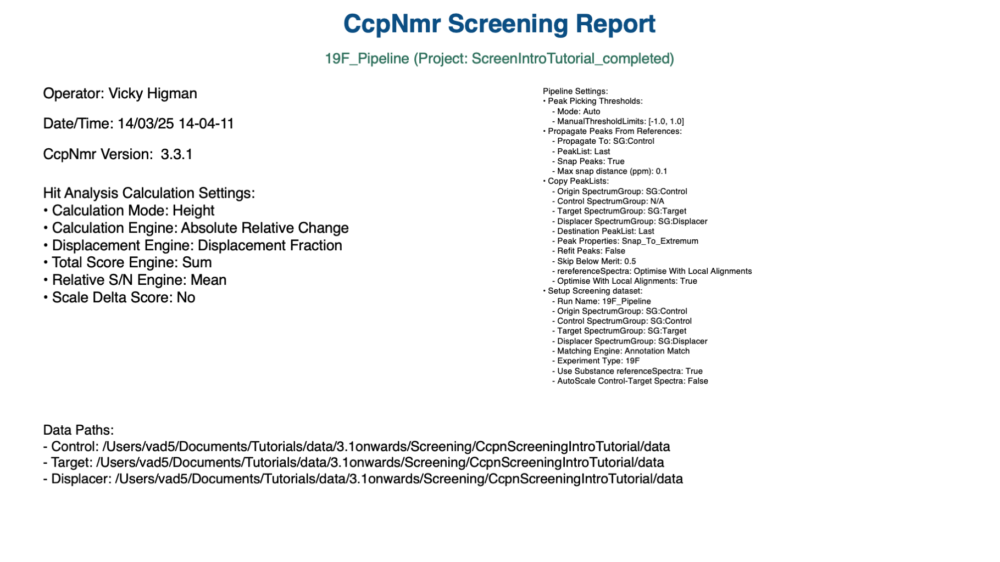
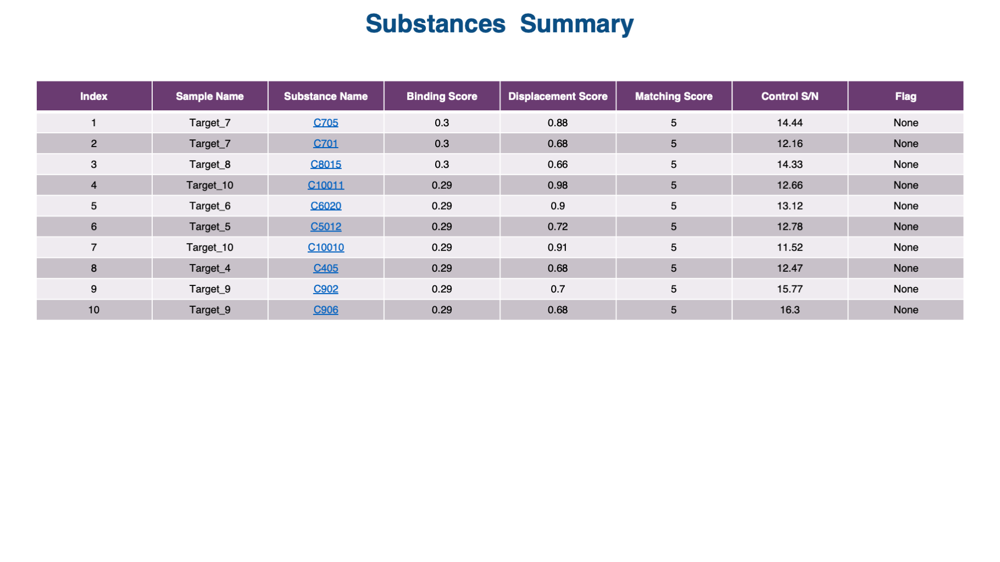
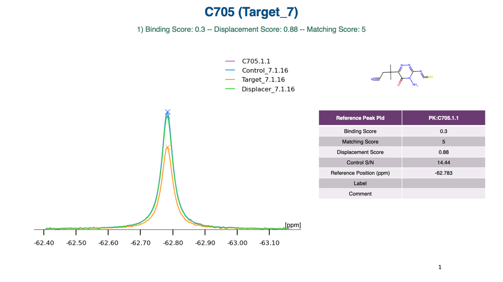

Video
VideoTutorials
& Manual

You can generate reports as PowerPoint slides. In the Substances table of the Hit Analysis Module, simply select the Substances for which you would like to generate the report, right-click and select Create Report for Selected Substances. Alternatively select Create Report for Visible Substances to create a report for all Substances currently in the table following filtering.
This example PowerPoint report shows the three different slide types prduced:
A cover slide provides information about the date, time, user, data, pipeline settings etc.
A summary slide provides a table of all Substances included in the report, with key pieces of data and links to the individual Substance slides.
The Substance slides provide information about the substance, including its structure (if a SMILES strings have been added to the project), the spectra and a table showing the binding, displacement and matching scores, signal/noise etc.
Several layers of customization are possible for reports:
The Screening_report_template.pptx and Screening_report_template_setting.json files can be found in the ccpnmr/resources/pptx_templates folder. Modified versions of these files can be placed either within the project (project.ccpn/resources/pptx_templates folder) or the user profile folder (~/.ccpn/resources/pptx_templates).
The program will preferentially load the files present within the project resources folder. If none are present, it will load the files in the user .ccpn/resources folder. And if this, too, has no files, the program will default to the files provided as part of the program distribution.
An altered ccpnmr/src/python/ccpn/util/pptx/pptx_templateMappers/ScreeningReportPPTxMapper.py file may be placed in the user profile folder (~/.ccpn/resources/pptx_templates) and, if present, will be used in preference to the default file in the program distribution.